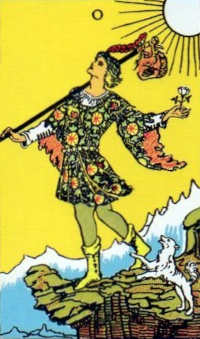
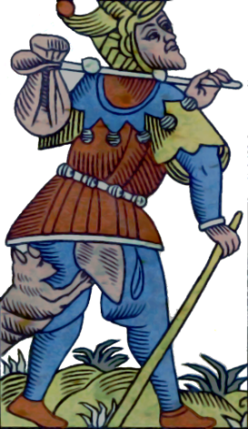
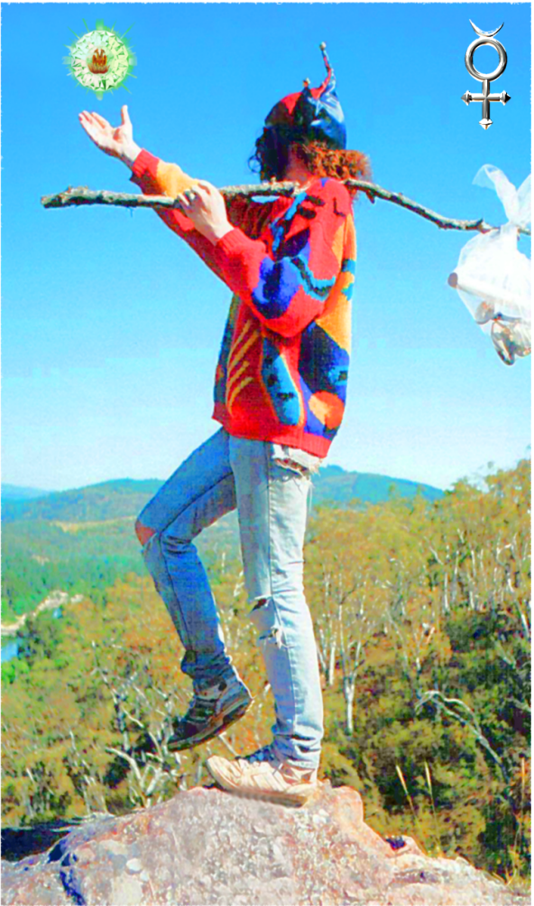
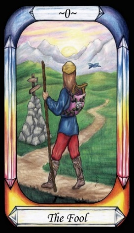

The Fool




Meaning |
A soul trapped in the material world, yearning to ascend back to heaven, but not knowing how. |
Opposite card |
Judgement Day, when we have the chance to ascend after Death. |
Function |
The Fool is a representation of Hermes Trismegistus, who through the revelation of the Pymander, allows us to purify the soul, becoming as a child, or a Fool, and so ascend back to heaven. Thus, his story unfolds as the Journey of the Soul.
[P1] Once upon a time, Hermes [The Fool] had a vision
This vision revealed a cosmology that transformed him from ignorance to enlightenment. There is an implication here that Hermes, like all men, was a Fool before he was given divine knowledge of his true nature by the Pymander, the mind of God. The Major Arcana is sometimes referred to as the Journey of the Fool, but it is not an earthly journey, but rather a spiritual one. It is the Journey of the Soul.
In order to become a Fool, or court jester, a person must rid himself of traits of authority, such as pride and arrogance. Only one who acts in an ego-less manner will be granted the right to taunt the high and mighty of court. Foolish behaviour masks a deeper mystery. What appears foolish to others is, in fact, wisdom. This paradox is echoed in the Castaneda books, which describe such intentional, wise action as “Controlled Folly”.
RWS Imagery
A man wears a cap with a feather in it, and a brightly coloured robe with feathery sleeves, and a belt of seven visible orbs. He also has reasonably distinctive boots. A white dog frolics at his heels. He carries a staff and a white flower. The staff bears a leather satchel which appears to have an eye upon it. He looks upwards, and appears about to step off a cliff. The cliff is in a high place, as indicated by icy mountains in the background. A white Sun shines down on the scene.
Interpretation of RWS Imagery
The dog in the Fool card may be inspired by Aesop's Fables (Laura Gibbs, 2002, 564), where Hermes interacts with a dog. This connection reinforces the Fool's association with Hermes.
Aesop's Fables, translated by Laura Gibbs (2002)
564. Hermes AND THE DOG.
“There was a four-cornered statue of Hermes by the side of the road, with a heap of stones piled at its base. A dog approached the statue and said to it, 'To begin with, Hermes, I salute you! And now I am going to anoint you, since I cannot let a god go by without anointing him, much less a god of the athletes.' Hermes said to the dog, 'If you can just leave the oil alone and not pee on me, I shall be grateful enough; you do not need to honour me in any other way!”
Notably, the Fool’s attire and accessories hold significant symbolic meaning. They are a hat, a staff, a satchel, and boots/sandals are reminiscent of mythological icons:
The hat is the Petasos - Hades’ Cap of Invisibility, with the feather potentially representing wings to match the sandals.
The boots evoke the Talaria, the Winged Sandals of Hermes, granting the power of flight.
The satchel is akin to the Kibisis, used by Perseus to carry the Gorgon’s head.
The staff is that of Perseus and is the central staff of the Caduceus.
Additionally, the white rose symbolizes purity of soul, echoing the theme of spiritual growth
For a movie example, consider the “Jewel of the Nile”, and the Sufi mystic who saves the hero and heroine by clowning around with his umbrella. Morris dancers are a real-world example of people who will act foolishly in public to demonstrate their purity of soul.
Discussion
Considering the Fools significance, let’s discuss its implications
The Fool is numbered 0, or unnumbered, and oral tradition indicates that it can move around in the sequence. Comparison with the Pymander indicates that the Fool represents Hermes, who is the recipient of the Pymander, and so is present throughout the telling of the Pymander, and especially the initially foolish version of Hermes before his enlightenment to the Pymander. All paths of enlightenment tend to follow this path from foolishness to wisdom, with the Gnostic / Neoplatonic focussing more on actual knowledge, such as the Pymander, rather than just a feeling of the presence of God. Many religions emphasise some form of continued existence after Death. This existence should be free of the suffering and trappings of mortal life. The Pymander provides all of this, along with links to Astrology, and clear categorisation of the mortal sins, so that one can work against them. This approach has links back to Egyptian mythology, with Anubis weighing the souls of the dead to see if they are light enough to ascend. Christianity also says that if you become like Christ, you too can rise from the dead.
The seven white spheres around his waist are the seven Governors, and bears strong resemblance to the Hebrew Adam Kadmon, the primordial man.
“If you want to improve, be content to be thought foolish and stupid” – Epictetus